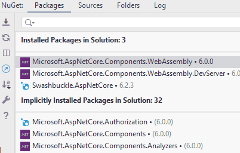
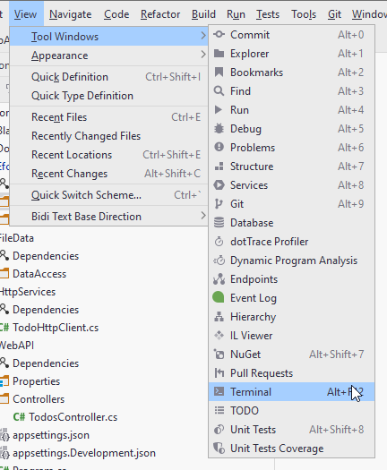

- 1 Introduction
- 2 Architecture
- 3 New Component
- 4 DAO Implementations
- 5 Add EFC
- 6 Installing db tools
- 7 Create DbContext
- 8 Configuring tables
Introduction
This is the third part of a 3 part tutorial series.
You should already have the Todo Web API in place from the first part, and the Blazor-WASM app from the second tutorial. We will continue working in the same Solution.
This tutorial will cover swapping out the current JSON-data layer with a layer using Entity Framework Core and SQLite.
We will make modifications to the server side. The client will not be touched, as it does not care how the data is saved/loaded.
Features
We still have the same features, i.e. user stories as in the previous two tutorials, however, they are less interesting in this part.
Instead, we must make substitute classes for TodoFileDao and UserFileDao. The new classes will implement the same interfaces,
which will make it easy ot let the Web API use the new layer instead of the old. It requires only a few modifications to WebAPI/Program.cs, where we register new implementations of the interfaces.
The new EFC implementations will then be injected into the Logic layer.
We will still implement the methods in the same order as the user stories, so that we can test along the way.
Branches
The data layer methods implemented for each user story is planned to be in its own branch, similar to what you have seen so far.
I might merge some features, if there is no change to existing code.
Let's go
That should be all, let us get started.
Architecture
We are going to add a component to house the functionality of using Entity Framework Core for data management.
Below is a low detailed class diagram, you saw it back in part 1:

You don't currently have the EfcDataAccess component, but we will make it shortly.
We put the I*Dao interfaces into the Application component to make it easier to swap out the implementations, and we will see this in a minute.
This is where Dependency Inversion Principle and Dependency Injection comes into play.
New Component
Let us go ahead and create a new component/project in your solution.
It is a class library, call it "EfcDataAccess".

Which will result in a solution structure like this:

Your new library contains a dummy Class1, delete it.
Dependencies
The below is a component-diagram, and the dotted arrows shows the inter-component dependencies. Most of them was setup in the first tutorial:

Remember how the dependencies were supposed to flow according to Clean Architecture. The ones from WebAPI to Data components is unfortunate but necessary.
Who knows about who?
Application depends on Domain.
The WebAPI depends on Application, because the Controller classes need to call the methods in the Logic interfaces.
The FileData depends on Application, because the DAO classes in FileData must implement interfaces located in Application.
The WebAPI also knows about FileData and EfcDataAccess, only because it is in WebAPI/Program.cs we register services, including the implementations of the IUserDao and ITodoDao interfaces.
Because of transitive dependency both WebAPI, FileData, and EfcDataAccess knows about Domain.
We need to set up two new dependencies:
- WebAPI -> EfcDataAccess
- EfcDataAccess -> Application
Go ahead and do that.
EFC DAO Implementations
Inside EfcDataAccess create a folder (similar to what we have in FileDate): "DAOs".
We start by creating the two implementations, just so they are in place. Then we implement the methods one by one.
Create the two following classes:
TodoEfcDao class
Create this class in EfcDataAccess/DAOs.
Implement the interface "ITodoDao", then include the inherited methods. Your class now looks like this:
public class TodoEfcDao : ITodoDao
{
public Task<Todo> CreateAsync(Todo todo)
{
throw new NotImplementedException();
}
public Task<IEnumerable<Todo>> GetAsync(SearchTodoParametersDto searchParameters)
{
throw new NotImplementedException();
}
public Task UpdateAsync(Todo todo)
{
throw new NotImplementedException();
}
public Task<Todo?> GetByIdAsync(int todoId)
{
throw new NotImplementedException();
}
public Task DeleteAsync(int id)
{
throw new NotImplementedException();
}
}
UserEfcDao class
Then create this class, implement interface and methods:
public class UserEfcDao : IUserDao
{
public Task<User> CreateAsync(User user)
{
throw new NotImplementedException();
}
public Task<User?> GetByUsernameAsync(string userName)
{
throw new NotImplementedException();
}
public Task<IEnumerable<User>> GetAsync(SearchUserParametersDto searchParameters)
{
throw new NotImplementedException();
}
public Task<User?> GetByIdAsync(int id)
{
throw new NotImplementedException();
}
}
Register services
Let's now swap out the DAO implementations, so that the server uses our new classes here. Obviously nothing will work, but we can then test along the way.
Open WebAPI/Program.cs
Find these lines:
builder.Services.AddScoped<FileContext>();
builder.Services.AddScoped<IUserDao, UserFileDao>();
builder.Services.AddScoped<IUserLogic, UserLogic>();
builder.Services.AddScoped<ITodoDao, TodoFileDao>();
builder.Services.AddScoped<ITodoLogic, TodoLogic>();
Lines 2 and 5 is where we specify that whenever a class requests a IUserDao or ITodoDao, that class wil actually get a UserFileDao or TodoFileDao, respectively.
Swap out the implementations, so it looks like this:
builder.Services.AddScoped<FileContext>();
builder.Services.AddScoped<IUserDao, UserEfcDao>();
builder.Services.AddScoped<IUserLogic, UserLogic>();
builder.Services.AddScoped<ITodoDao, TodoEfcDao>();
builder.Services.AddScoped<ITodoLogic, TodoLogic>();
Notice the 2nd type parameter is changed from e.g. UserFileDao to UserEfcDao.
Test Dependencies
Now, the above code in the WebAPI/Program.cs was the only place, where anything outside the FileData component referenced code inside the FileData component. We have now completely detached this component from the system.
You can verify this, by deleting the FileData component, and you should see that your code still compiles.
So, a minor change to two lines of code, and we have swapped a large chunk of functionality. This is where the Dependency Inversion Principle shines.
We can now proceed with implementation of the functionality in EfcDataAccess component, without causing changes to the rest of the code base.
Test of the System
We can't test much, since we just broke all our functionality. But you should be able to run the Web API, and interact with the endpoints through the Swagger page. You will just get an error every time.
Before we can start fixing that, we need to set up the Entity Framework Core and the database.
Add EFC Packages
Entity Framework Core (EFC) is an "Object Relational Mapper". That means it can generate a relational database, with tables, attributes, relationships (foreign keys), etc, based on your domain classes, and their associations.
In our case we have a Todo and a User object, with an association from Todo to User, as the assignee.
If we use these model classes as the basis for EFC, it will generate two tables: Todos, Users. And there will be a foreign key from a Todo to a User.
We don't have to use SQL at all.
Add NuGet Packages
First, we need to include some packages in our EfcDataAccess project, so that we get access to the EFC functionality.
Open the NuGet manager, in Rider it's found here:

Or you can find a tab in the bottom bar in Rider.
You need to add three packages to EfcDataAccess:
- Microsoft.EntityFrameworkCore
- Microsoft.EntityFrameworkCore.Design
- Microsoft.EntityFrameworkCore.Sqlite
It is done like this:

- You search for the package.
- You select the correct package from the search results.
- You select the correct version. And which is that? All three packages should be the same version. At the time of writing the latest is 6.0.9. Pick the latest version, which is not marked preview or rc (whatever rc means), these are "beta" versions.
- Then you click the plus icon for the project to which you want to add this package.
- You click Install in the popup
Do this for all three packages.
Microsoft.EntityFrameworkCore and Microsoft.EntityFrameworkCore.Design is always needed, together they let you generate a database based on your domain classes.
Microsoft.EntityFrameworkCore.Sqlite is needed because we are going to use SQLite as our database. If you wish to use to use another database, e.g. MySQL or MSSQL or PostgreSQL, you'll have to import a specific NuGet package for that.
Installing Db Tools
You will need to install a command line interface (CLI) tool, which is used when creating/updating the database. This should be needed only once.
Open the terminal in Rider:

The terminal can also be found in the bottom menu bar of Rider, next to the NuGet package manager tab.
In the terminal type (it shouldn't matter which directory, you're in):
dotnet tool install -g dotnet-ef
The -g means the tool is installed globally, and so you shouldn't have to install it again, if you create a new solution, e.g. for your SEP3.

Create DbContext
You currently have a FileContext class, in FileData component, which is responsible for providing collections of Todo and User. It also loads data, and saves changes.
The DbContext has a similar responsibility. Furthermore, it is here we define how the database should look like. Sort of.
Create a new class, "TodoContext" (or whatever), inside EfcDataAccess component. It must inherit from DbContext, which is available after the installation of the NuGet packages, slide 5.
Specifying the Database
We need to specify which database to use. That's done in the inherited method OnConfiguring(...).
The class currently looks like this:
public class TodoContext : DbContext
{
public DbSet<User> Users { get; set; }
public DbSet<Todo> Todos { get; set; }
protected override void OnConfiguring(DbContextOptionsBuilder optionsBuilder)
{
optionsBuilder.UseSqlite("Data Source = Todo.db");
}
}
We have defined two DbSets. When the database is generated, it will result in a table per DbSet, so we get a Todos table and a Users table.
We an interact with the DbSet in a similar way to how we used the Collection of the FileContext.
We interact with this DbSet to add, get, update, remove Todos from the database.
The OnConfiguring(...) method is here used to specify the database to be used. This is done with the method UseSqlite(...). This method is available because we added a NuGet package for SQLite.
If we were using Postgres, we would have a different method here, probably UsePostgres(..).
The argument is the name of the SQLite database file: Todo.db. For SQLite it is simple, there is no authentication, there is no actual database server running, so no ip or port. The "connection string" here is just a reference to the file. For other databases, you will have to provide a more elaborate connection string.
SQLite is just a single file, so that makes it easier to work with, instead of having to use Postgres or MySql or similar. And the argument of UseSqlite(..) is just pointing to this file.
You may sometimes need to specify the absolute path to the file, e.g.:
C:\TRMO\RiderProjects\TodoAppWasm\EfcDataAccess\Todo.db
This is because your main method is in one project, and the file is in another.
Alternatively a relative path should be possible too, something like:
..\EfcDataAccess\Todo.db
Note
The above method is a simple approach, however we have now hardcoded the database info, and it may not be easy to modify.
Usually the connection info will go into a configurations file, and the program will read from that. This provides the option of being able to change the connection string after the program is compiled and deployed.
Furthermore the optionsBuilder.UseSqlite can be done in Program.cs, so that it is easier to modify which database is used, without having to tough the TodoContext class. This increases flexibility, if you ever wish to change database. We don't, so we keep it simple.

It is left to the reader to google how to do that, if they're interested.
Other Database Providers
If you wanted to use a different DBMS, e.g. Postgres, you would add a NuGet package for a Postgres driver.
That would then include a method UsePostgres(...), in which you would provide connection arguments.
Configuring the Tables
Now, we need to add some information to be used when the database is generated. This includes:
- The attribute to use as Primary Key for each domain class
- Various constraints on the attributes, e.g. length, range, optional/required
There are two approaches:
- data annotation attributes in domain classes
- define it in DbContext subclass, i.e. the TodoContext
I will show both approaches here, and provide some discussion, so that you may prefer one approach over the other.
Data Annotation Attributes
You have seen various attributes before, e.g. on the endpoints in your REST controllers, we would put [HttpGet]. And on the Controller itself we put [ApiController].
We can also put attributes in our domain classes to define the above mentioned configuration.
Primary Key
We have the attribute Todo::Id, it already acts as a primary key, it is a unique identifier for a Todo.
If the property is called "Id", EFC will usually infer that this is the primary key.
If the property is called "
In both cases, I believe the property must be of type int (not entirely sure, though).
You can also manually define a primary key property, by adding the [Key] attribute to a property:
public class Todo
{
[Key]
public int Id { get; set; }
public User Owner { get; }
public string Title { get; }
public bool IsCompleted { get; set; }
public Todo(User owner, string title)
{
Owner = owner;
Title = title;
}
}
I prefer to be explicit. It minimizes confusion, I believe.
Constraints
We can also define various constraints, as mentioned above. This can be done with attributes too.
If we make a property nullable, i.e. append a "?" on the type, like int?, we make that attribute in the database nullable: it is allowed to not be set. If we don't make a property nullable, then it is by default required in the database.
We can set a max length on e.g. Title like this:
[MaxLength(50)]
public string Title { get; }
We can define an allowed range on number types with e.g. [Range(0,250)].
You can find more attributes here
Web API and Blazor
If we apply these data attributes, they are actually also used by the Web API. Before an endpoint with a Todo argument is called, the data from the client is validated using the attributes. If the incoming data violates your attribute constraints, the request will just be denied, and not reach your endpoint.
Similarly, Blazor has a built in input-form with various components. These will also use the attribute to validate the data.
OnModelCreating(..) Method
This way does not require modification to the domain classes. We can set similar information by overwriting this method in the DbContext sub-class.
Primary Key
As above, the Key can be inferred by the naming of the property.
Alternatively, we can define primary keys on User and Todo like this:
protected override void OnModelCreating(ModelBuilder modelBuilder)
{
modelBuilder.Entity<Todo>().HasKey(todo => todo.Id);
modelBuilder.Entity<User>().HasKey(user => user.Id);
}
In this way, we say that the entity "Todo" has a key, and the lambda expression defines which property to use as the key.
Constraints.
You can also some the constraints in OnModelCreating(..). Here is an example of limiting the Todo::Title to 50 characters:
modelBuilder.Entity<Todo>().Property(todo => todo.Title).HasMaxLength(50);
It seems you can not do exactly the same constraints as with the attributes. E.g. I have found no Range, or MinLength.
So, if you really need those constraints, you may have to use attributes.
Do We Need Constraints?
Now, whatever constraints we apply, they should obviously match the validation rules we implemented in the logic layer.
And because we already validate things in the logic layer, we could just neglect them in the database.
If we have the rules two places (or three if you do them in the client), then you will also have to update multiple places, if you need to change something.
We could then consider just having the constraints in the database, and not in logic layer. But then the logic layer needs to trust those rules are enforced elsewhere, which is probably not a good idea.
Discussion
So which approach do you use? Attributes or the OnModelCreating method.
Many C# EFC examples will gladly put the attributes in the model classes. This is also true for their Web API examples, and Blazor examples. And this can be just fine.
Clean Architecture
However, remember the Clean Architecture. General diagram on the left, our own system on the right:

On the right side is the structure for the Todo App. The general diagram also considers things like using some third party api (external interfaces), and the web, and various devices (keyboard, mouse, hard drives, etc). So, the right hand diagram shows only what is relevant for our app.
We have three layers: Web API, logic, data access. And we have a domain component with the domain classes. These things are contained in the green, red, and yellow rings. The blue is everything outside of that, outside the code of our server app: The client app (Blazor), the file/database where the data is stored.
Dependencies go inward: A ring knows about the ring inside it. A ring knows nothing about the ring outside it. Compare this to the component diagram and inter-component dependencies shown on slide 2.
An outer ring may not cause changes to an inner ring. What does that mean?
- The database is in an outer most ring. If we initially use a relational database like Postgres, and later want to change to something else, it should not cause change anywhere else than the Gateways (our DAOs).
- If we swap out the REST Web API with a gRPC server, it should not cause changes to the red or yellow rings, i.e. logic or domain.
- If we introduce new logic rules, it shall not cause modifications to the Domain.
This is at least the ideal, when doing a Clean-architecture approach, as we have attempted.
Attributes approach
If we use this approach, we need to modify the domain classes, i.e. the yellow ring. Because of something in the blue ring. We use EFC (or Web API) and therefore, we modify the Domain.
If we change to not use EFC (or the Web API), these attributes are no longer relevant, and shouldn't be there.
This means that a change to the outer blue ring, will cause a change to the inner yellow ring, and it goes against what is dictated by clean architecture.
OnModelCreating appraoch
If we use this approach, all setup is done in the green ring, in the DAOs/Gateways area. We need not touch the Domain. If we later remove EFC, and introduce a file storage again, or just manually typing the SQL as in SEP2, it will not cause changes to the Domain (inner yellow ring).
So with this approach, we adhere to the Clean principles.
Conclusion
Based on the above, you may conclude that you shall not use the attributes. That is not strictly true. As mentioned, many .NET examples will gladly use these attributes, and often together with the OnModelCreating method. The point is just that you make an informed choice.\
It is not that often, a database is swapped out. And if you use EFC and swap out one relational database for another, it is minimal work.
If you swap out a relational database for a document based, you will no longer need the attributes, but on the other hand, in this case they do nothing. So you may not need to remove them.
TODO SNAK OM at man også kan lave subclasses. Fx hvis man vil have two-way navigation properties.